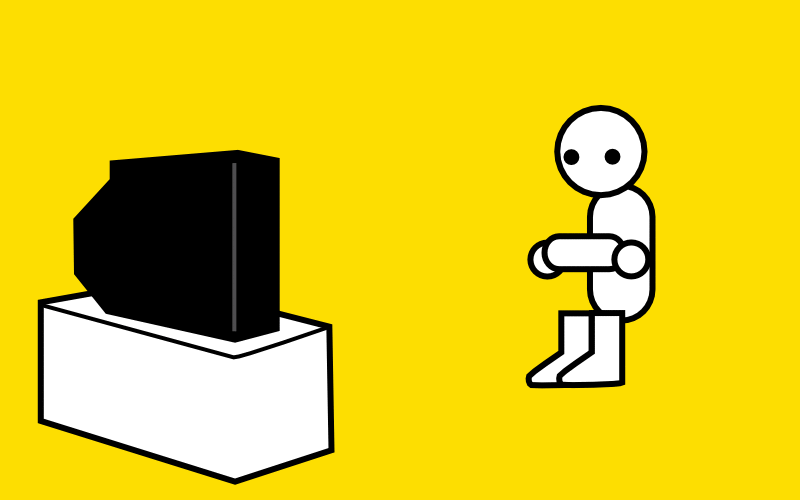

𝙋𝘾 𝙂𝙖𝙢𝙞𝙣𝙜 𝙈𝙮𝙩𝙝𝙨
Welcome to
PC Gaming is Dead
This is untrue because the majority (67%) of gamers play on a gaming PC and if PC gaming was dead it would mean that most of gaming would be dead and in fact gaming is bigger than TV and some movies and is worth $18 billion in the US alone and is forecast to be worth $220 billion by 2022. PC gaming is only just starting to grow properly and is getting bigger every day.

PC Gaming is Way Too Expensive
Although the buy in price of PC is larger than a consoles buy in price (which makes it seem more expensive) It has free online play and voice chat so you dont need to pay for a subscription like Playstation Plus or Xbox Live Gold. The games are also far cheaper with Steam sales on every day for something or other and you can also buy games on G2A. This means that there is an open market meaning you dont have to buy all your games from one placeso you can get better deal and more freedom. If you want (it is not reccomended) you can also pirate games. You can also use a friends account to download a game, sign out of their account after it is downloaded and then you have got yourself a free game! You wouldnt be allowed to do that on console. When you look at console and most of the popular games are £60 it will all soon add up and they most popular PC game, CS:GO is free. If you have a gaming PC it also means that you wont have to buy two seperate systems for playing games on and doing work on.
PC Doesnt Have Many Games
All games are developed on a PC so already this is a stupid misconseption and because the games are made on a PC (unless the games are physically held back intentionally for a brand deal of some sort) they are released first. PC gaming also has 33,873 games at the time of writing this on steam alone and there is much more outside of steam. That is more than the PS4 and Xbox combined (Xbox and PS4 combined has 3738 games at the time of writing this).
